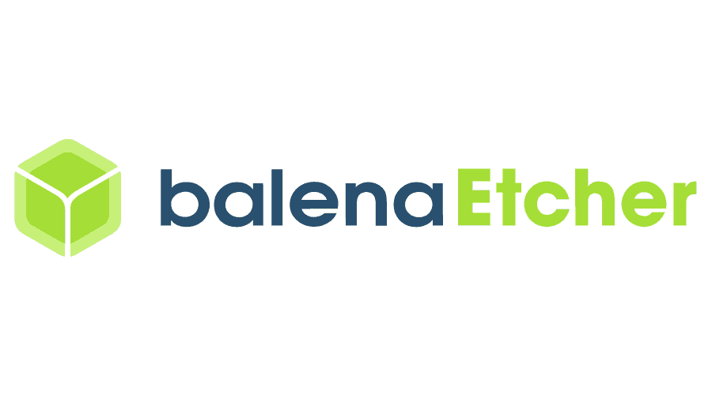
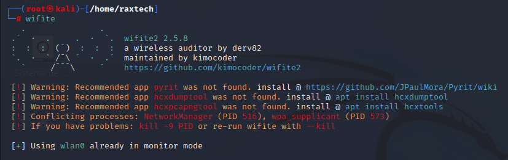
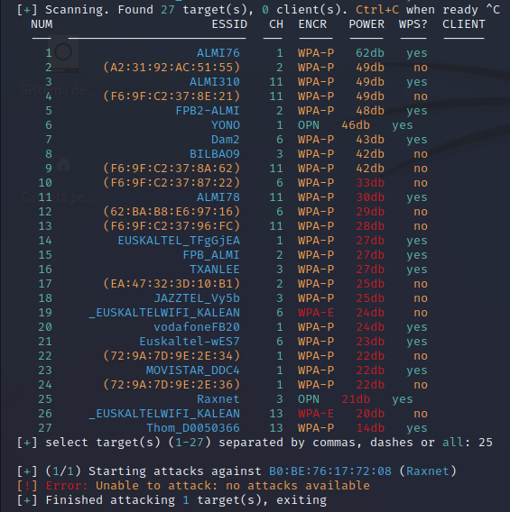

Indice
- Wifi Auditoria
1.1 Untangle eta Kali Linux
1. Wifi Auditoria

Untangle
'Untangle', sistema eragile hau, kontrol sarea eta sare segurtasuna dauka.
Behin .ISO deskargatzen duzula, instalatu edo ireki '
Balena Etcher'
eta USB batekin, flasheatzen dugu gure sistema eragilea USB-ra.
Untangle Deskargatu

Kali Linux
 
Raid
Raid hau egiteko, makina birtual bat egin dugu VirtualBox-ekin. Makina honetan, 3 disko jarri ditugu.
Raid 1 egin dugu Iker-en dokumentazioarekin.
Komando hau, (lsblk) gure dispositiboaren informazioa emanten digu.